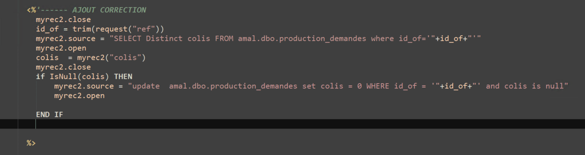
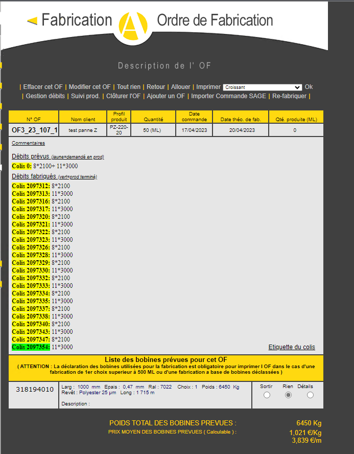
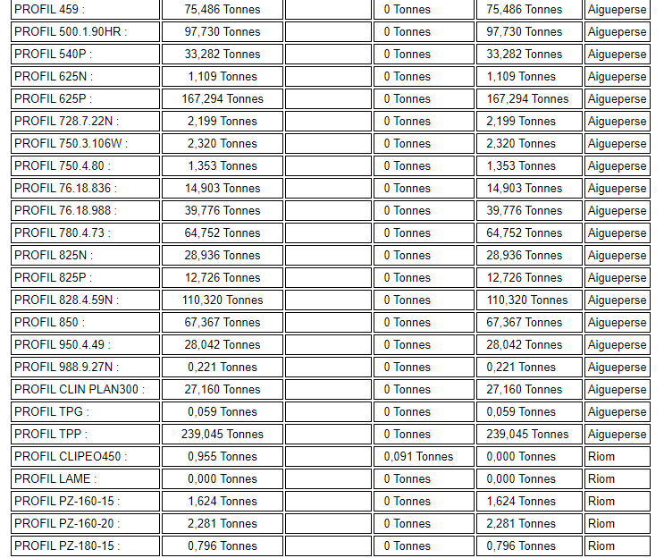
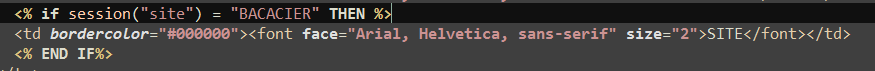

Mission 1er stage : Correction intranet
Contexte :
J'ai travaillé seul sur cette mission. Je travaillais sur une partie de l'intranet de l'entreprise.
Cette partie s'occupait de l'affichage des ordres de fabrication.
Pour cela j'ai dû vérifier dans la base de donnée si le colis était initialisé à null ce qui provoquait l'erreur,
Environnement technologique :
- notepad ++
- microsoft sql server
- bureau à distance (environnement de développement)
- ASP Legacy
- mysql
- HTML / CSS
compétence mobilisée :
- B1.2.3 : Traiter des demandes concernant les applications
J'ai dû trouver comment corriger une erreur présente qui était dû à une erreur NULL dans la base de donnée.


Puis j'ai dû réaliser une autre amélioration qui était le rajout d'une colonne auquel j'ai dû créer un nouveau champ dans la base.

